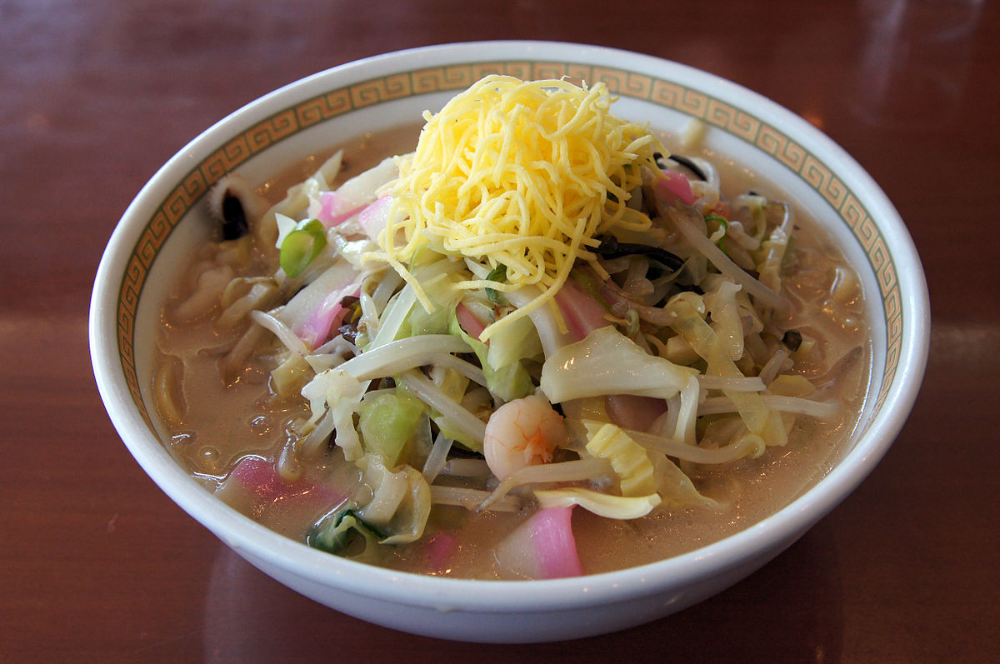

Champon Ramen
「ちゃんぽん — A fusion of sea and land in one bowl.」
Champon comes from Nagasaki and combines seafood, pork, and vegetables in a single broth. It's a hybrid ramen, with a creamy base and a mild flavor. Its name literally means "mixture," reflecting its diverse and multicultural spirit.
Ingredients
- Pork and chicken broth
- Thick noodles
- Seafood (squid, shrimp), pork, cabbage, and bean sprouts
Flavor
Smooth and slightly sweet with marine notes.
Flavor
Smooth and slightly sweet with marine notes.
Texture
Creamy and light, with a balance between the solid ingredients and the broth.